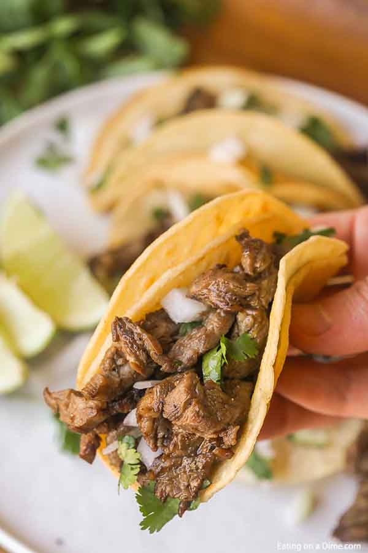

Street Taco's

Description
Have you ever wanted to eat a delicious meal without breaking the bank? No look further!
Here we will make carne asada street tacos that will satisfy your hunger and make you
come back for more!
Ingredients
- Corn Tortillas - Small Size
- Carne Asada Meat
- Diced White Onion
- Chopped Cilantro
- Red or Green Salsa
- Cotija Cheese
- Jalapenos
Steps
- Start by dicing your whole white onion into small pieces.
- Next, finely chop up your cilantro and discard the ends.
- Chop the stem off the jalapenos and slice into quarters.
- Lightly oil your favorite pan and place the pan on the stove on medium heat.
- Once the pan is hot, place your carne asada meat on to the pan.
- Lightly oil a small pan and place on the stove at medium/low heat.
- Be sure to stir and cook the meat thoroughly. Add quartered jalapenos to the meat pan.
- While the meat is cooking, put the corn tortillas on the pan and flip every minute.
- As tortilla's finish cooking, remove and put on a plate. Do this for the amount of tacos you want.
- Once the meat is thoroughly cooked. Place the meat on a cutting board and chop it up. Place chopped up pieces into a bowl and cover.
- Place line of meat on the center of the tortilla.
- Add chopped onions and cilantro on top of the meat.
- Pour red or green salsa over the vegetables and meat.
- Sprinkle cotija cheese on top of the salsa.
- Fold the tortilla sides up, and enjoy with pickled carrots!